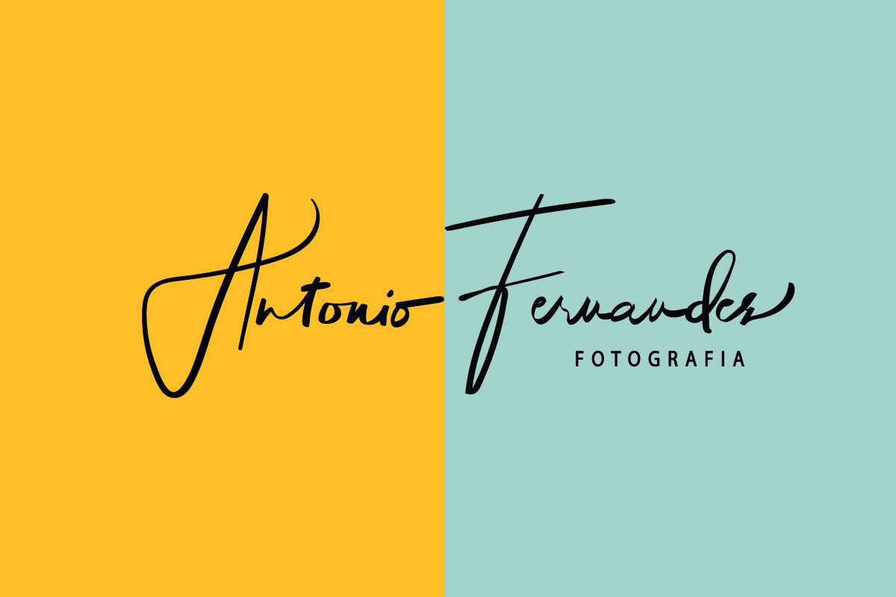

Home
Trybe
Fotogrado profissional. Atua no mercado a mais de 14 anos.
Realiazando diversos tipoes de eventos sociais, como casamentos, 15 anos, festas infanties e empresariais.
Confira abaixo um pouco mais sobre mim e sobre meus trabalhos.
Este sou eu:
Clique aqui e acesse meu portifolio